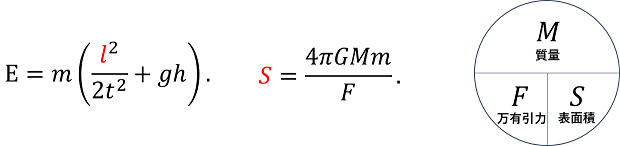

膜分隔と世界の存在条件
神が天と地を創ったとき，地には形がなく，空虚で，暗く，霊に満たされていた．地とは私たちが観測できる宇宙のことだ．神は光があるようにと云って光を在らせ，光と闇とを分けた．神は分けた．次の日には天の下の水と天の上の水を分けた．神は分けた．その次の日に天の下の水を集めて陸と海とを分けた．神は分けた．世界は分けられて生まれた．神が分けられたからこそ，世界は存在するようになった．
分けるには境界がいる．分けられたからには境界がある．境界の形は膜である．必ず膜である．素粒子は中身が空虚な膜であり，波面は見えるか否かにかかわらず膜であり，机やキーボードもどのようなスケールで見ても膜である．世界に存在するものの形は，おしなべて膜である．膜は空間を分けるから万物を存在させている．万物は空間を膜で分けてできている．
空間を分かつのだから，長さがかかわる．高校物理で習う式には長さがよく出てくる．力学的エネルギー保存則，万有引力，表面張力．膜の張力がものの硬さであるように，長さが表れない式であっても，考え方をさかのぼると，距離や面積や体積の変化を説明している．そもそも時間は空間変化を表す量なので，長さの変化は現象にとって本質的な量である． 
万有引力の式をみてみたい．分母にある長さは2物体間の距離を指すが，それを半径とする球を考え，さらにを掛けて球の表面積にすると理解しやすい．半径の球の表面積をとすると，となり，万有引力と「粒子」の表面積の積が質量であることが分かる．「粒子」が大きいほど質量も大きく，「粒子」の中に空隙があるほど万有引力は小さい．私たちの宇宙の質量はざっと分かっているので，この宇宙の表面積を求めれば，どのくらいの万有引力で隣の宇宙に引っ張られているかが分かる．
さて，別の福音書では，初めにみことばがあり，みことばは神と共にあり，みことばによって世界ができたとある．私たちは，ことばを分節化する．「膜分隔」という語を作ることで，世界の存在条件を説明しようとしている．私たちは，ことばを組織化する．「膜分隔」という語で検索することで，このページをみられるようにしている．私たちは，ことばによって分断する．「膜分隔」という語を広めることで，分かる人にだけ伝わるようにしてしまう．しかし神さまは，みことばで，世界全体を創り出したのである．
私の言語の境界が，私の世界の境界である．と書かれた本のまえがきには，この本は考え方に境界を引くために書いた，と述べられている．また，境界は言語によって引ける，とも述べている．人間はことばで世界に境界を引き，さまざまなものを作り出している一方で，境界を引くことで分断し孤立させることもする．境界が世界を存在させていることをもう少しよく知れば，力や資本や地位の間で対立はなくなっていき，強い存在を承認し，弱い存在を尊重していけると思う．神はすべての人間を分け隔てなく愛するからであろう．